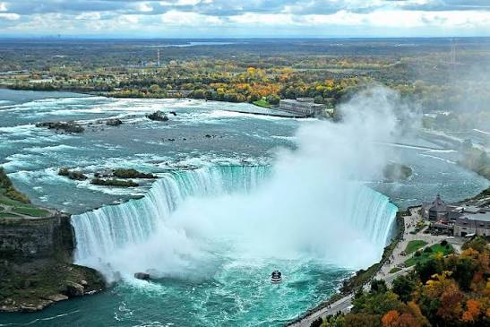
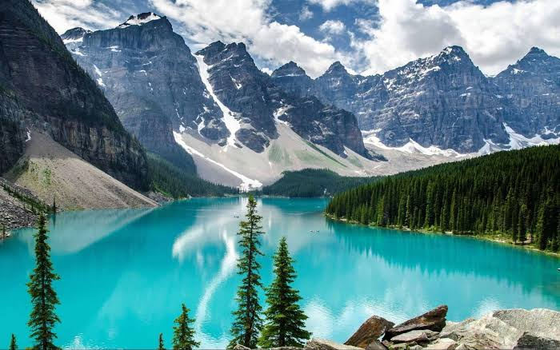

Toronto
Es la capital de la provincia de Ontario y una de las ciudades más grandes de Canadá. Destaca por la Torre CN, sus museos, centros comerciales, restaurantes y barrios multiculturales. También es un importante centro económico y cultural.
Canadá es un destino turístico muy atractivo debido a sus enormes espacios naturales, montañas, lagos, bosques, ciudades modernas y construcciones históricas. Su territorio ofrece experiencias diferentes durante todas las estaciones del año. Los visitantes pueden disfrutar de actividades al aire libre, conocer su cultura y recorrer algunos de los paisajes más conocidos de Norteamérica.

Las Cataratas del Niágara se encuentran en Ontario, cerca de la frontera entre Canadá y Estados Unidos. Son un conjunto de grandes cascadas conocidas por su belleza y por la enorme cantidad de agua que cae constantemente.
Son uno de los atractivos turísticos más famosos del país. Los visitantes pueden observarlas desde diferentes miradores, realizar recorridos en barco y conocer los alrededores.
Durante la noche, las cataratas pueden iluminarse con diferentes colores, lo que crea un espectáculo visual muy conocido.

Se encuentra en la provincia de Alberta, dentro de las Montañas Rocosas. Es uno de los parques nacionales más conocidos de Canadá y destaca por sus montañas, glaciares, bosques y lagos de aguas cristalinas.
Uno de sus lugares más famosos es el lago Louise, reconocido por el color turquesa de sus aguas y por el paisaje montañoso que lo rodea.
En este parque se pueden realizar caminatas, observar animales silvestres, tomar fotografías y practicar actividades de invierno.
Es la capital de la provincia de Ontario y una de las ciudades más grandes de Canadá. Destaca por la Torre CN, sus museos, centros comerciales, restaurantes y barrios multiculturales. También es un importante centro económico y cultural.
Está ubicada en la costa del océano Pacífico, en la provincia de Columbia Británica. Es conocida por sus parques, playas, montañas y paisajes naturales. Stanley Park es uno de sus espacios verdes más famosos.
La ciudad de Quebec es conocida por su arquitectura histórica y su influencia francesa. Su centro histórico, declarado Patrimonio de la Humanidad por la UNESCO, cuenta con calles antiguas, edificios históricos y construcciones representativas.
Canadá cuenta con muchos otros lugares que destacan por su historia y belleza natural. Entre ellos se encuentra Ottawa, la capital del país, donde se ubican importantes edificios del gobierno y museos nacionales.
También destaca la isla de Vancouver, conocida por sus paisajes costeros, bosques y actividades relacionadas con la naturaleza. En el norte del país se pueden encontrar regiones donde es posible observar la aurora boreal.
Los turistas pueden realizar caminatas, recorridos en bicicleta, paseos en barco, visitas a museos, esquí, snowboard y excursiones por parques naturales. Durante el verano son populares las actividades acuáticas, mientras que en invierno destacan los deportes sobre nieve y hielo.
El clima de Canadá cambia dependiendo de la región. Los inviernos suelen ser fríos en muchas provincias, con nevadas y temperaturas bajas. Los veranos pueden ser cálidos, especialmente en el sur.
La primavera y el otoño son buenas temporadas para disfrutar de los paisajes y observar los cambios de colores en la naturaleza. La elección de la temporada depende de las actividades que se quieran realizar.
El turismo es importante para la economía canadiense porque genera empleos y beneficia a hoteles, restaurantes, transportes, comercios y empresas de actividades recreativas. Además, permite mostrar al mundo la riqueza natural, histórica y cultural del país.
Canadá ofrece una gran variedad de destinos turísticos para diferentes gustos. Sus cataratas, montañas, parques nacionales y ciudades históricas lo convierten en un lugar atractivo para visitantes de todo el mundo. Su riqueza natural también hace importante proteger sus espacios y promover un turismo responsable.